Für Benutzer
Datenschutz- und Benutzeraktivitäts- Komponente
Datenschutz: Kontrollzentrum
Modul: Alle Anfragen
Zeigt eingegangene Anfragen von Benutzern an.
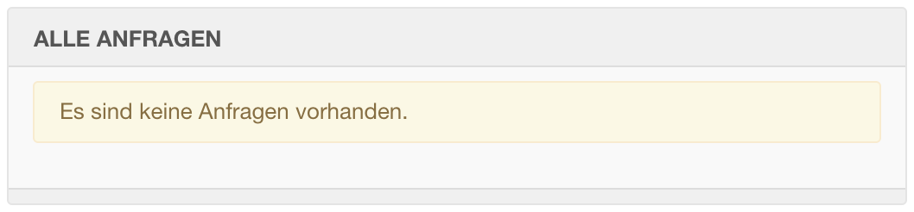
Datenschutz: Kontrollzentrum
Modul: Alle Anfragen
Unterscheidung zwischen Anfragen um gespeicherte personenbezogene Benutzerdaten zu löschen
bzw. diese per Export anzufordern.
Voraussetzung um Anfragen zu erhalten
Menüpunkt vom Menüeintragstyp:
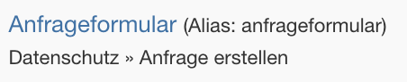
Anfrageformular im Frontend
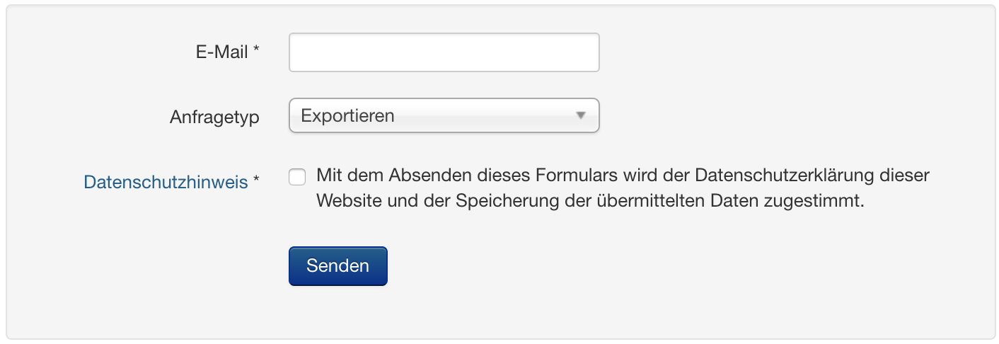
Anfrager muss Anfrage per E-Mail erst bestätigen
DSGVO und so...
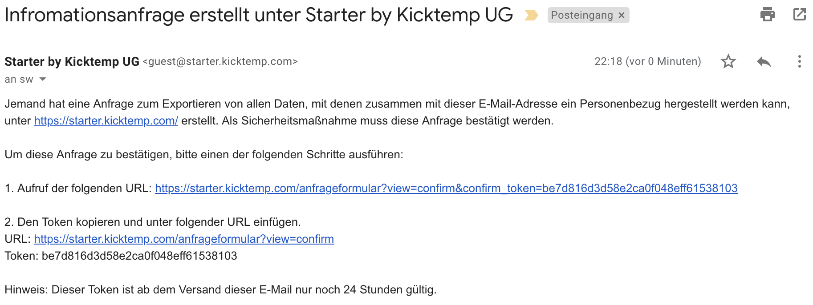
Weiterleitung auf ein Formular
Anfrager muss die E-Mail Adresse, welche die Anfrage gestellt hat eintragen.
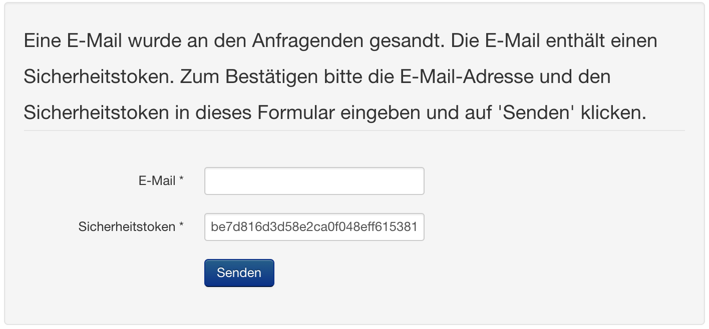
Status Bestätigt
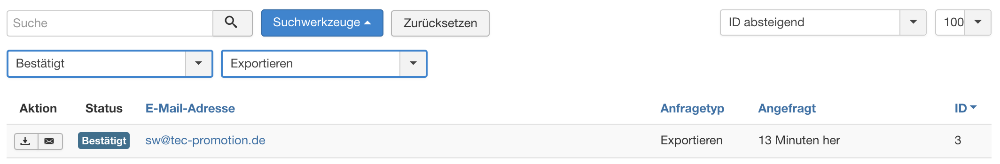
Zwei Möglichkeiten: Daten direkt herunterladen als XML oder Datenexport per E-Mail (XML-Anhang) senden.
Datenschutz: Informationsanfrage überprüfen
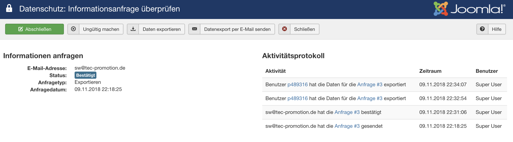
Datenschutz: Kontrollzentrum
Modul: Statusprüfung
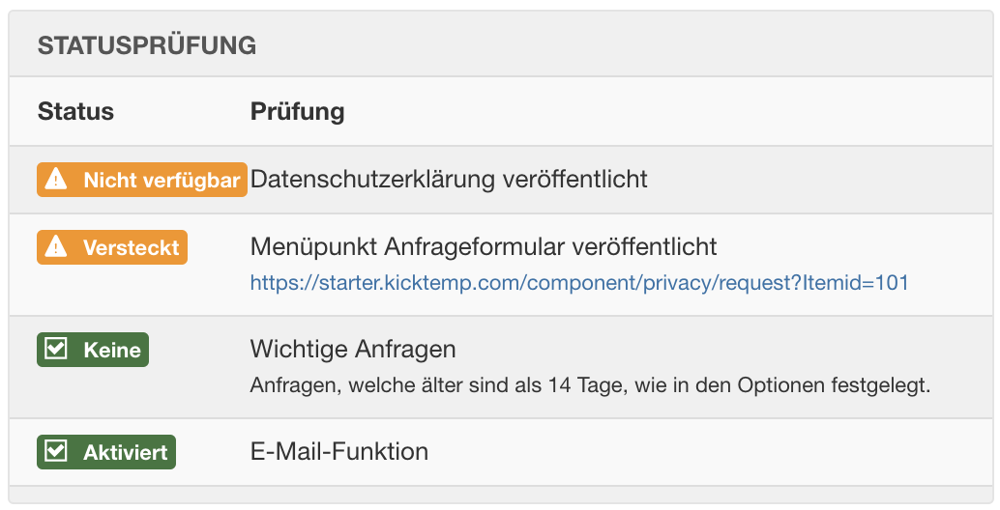
Datenschutz: Kontrollzentrum
Modul: Statusprüfung
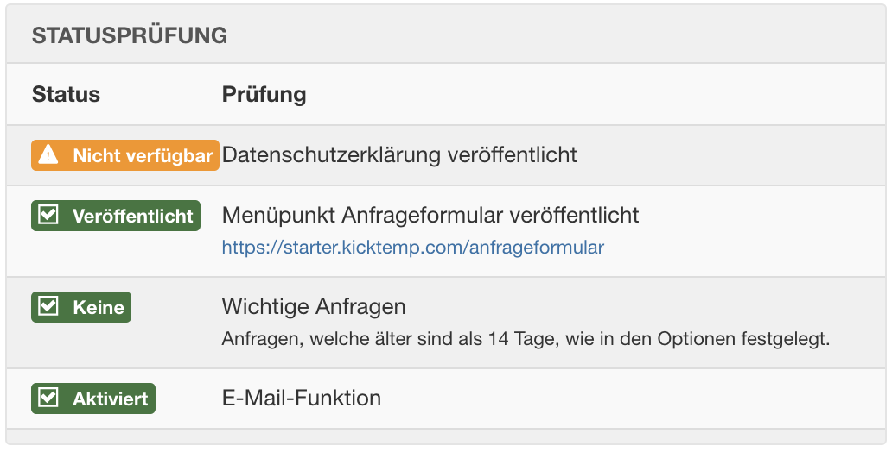
Plugin: Benutzer - Nutzungsbedingungen
Datenschutzerklärung verknüpfen mit Beitrag
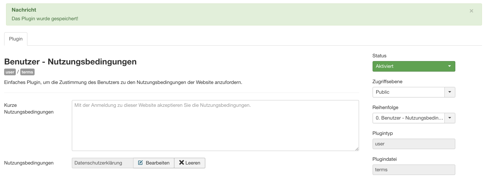
Datenschutz: Kontrollzentrum
Modul: Statusprüfung

Anwendungsfall:
- Benutzer (registered) können sich im Frontend einloggen
- Die Benutzer sollen der Datenschutzerklärung oder den Nutzungsbedingunbgen zustimmen
Anwendungsfall:
- Benutzer (registered) können sich im Frontend einloggen
- Die Benutzer
sollen müssen der Datenschutzerklärung oder den Nutzungsbedingunbgen zustimmen
Plugin: System - Datenschutz Zustimmung
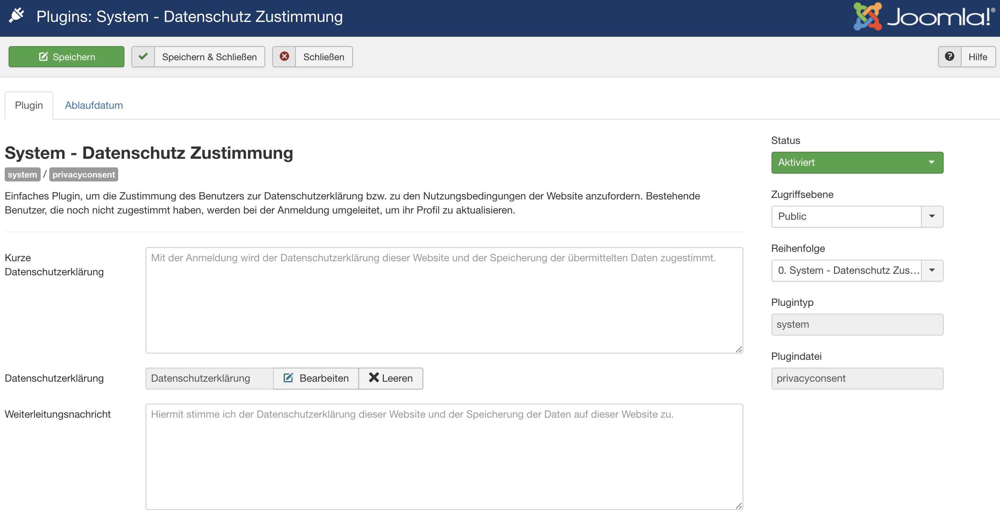
Nach Login im Frontend
Umleitung auf "Profil bearbeiten" bis Benutzer der Datenschutzerklärung zustimmt.
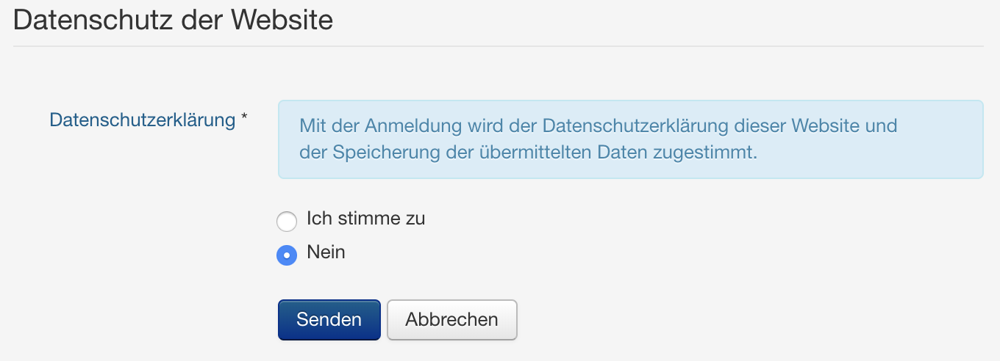
Plugin: System - Datenschutz Zustimmung
Ablauf konfigurierbar
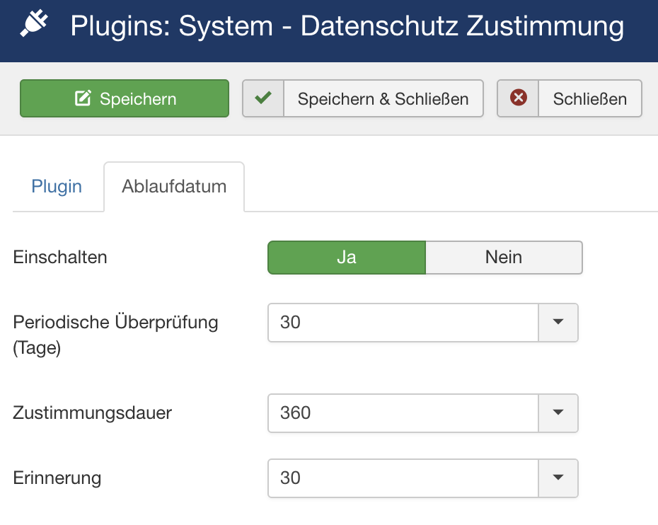